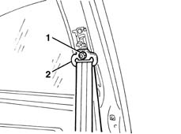
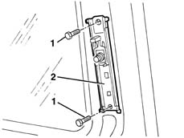

7065A18 Front set belt HEIGHT ADJUSTER , (one), left or right - R.R.
- Path
- Procedures > 70 FITTINGS > 7065 SEAT BELTS AND ACCESSORIES > 7065A FRONT SEAT BELTS > 7065A18 Front set belt HEIGHT ADJUSTER , (one), left or right - R.R.
- Kind
- repair procedure (removal / refitting; the operation number is the code)
- Applies to
- all engines; all production periods
- Interactive page
- https://sloeber94.github.io/elrnDB-lYpsln/en/#/2429689
Applies to: all engines; all production periods
 Removing
Removing
 Refitting
Refitting7040L40 front compartment scuff strip - r r
7050A20 one-piece rear seat cushion - r r
7040H38 central pillar upper element - r r
1. Undo the nut.
2. Move the seat belt relay.

Applies to: all engines; all production periods
1. Undo the bolts.
2. Remove the seat belt height adjuster.

Applies to: all engines; all production periods
Refitting
RemovingRefit the seat belt height adjuster.
Tighten the bolts to the specified torque.
 | Fastening | Component | Ø | Value (daNm) |
|---|---|---|---|---|
- | Bolt | FRONT SEAT BELT HEIGHT ADJUSTER. . | M8 | 2.0 |
Position the seat belt idler and tighten the nut to the recommended torque.
| Fastening | Component | Ø | Value (daNm) |
|---|---|---|---|---|
- | Nut | FRONT SEAT BELT IDLER | M7/16" | 4.0 |
7040H38 central pillar upper element - r r